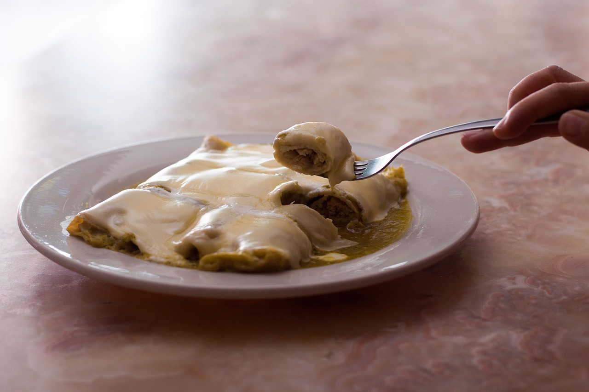

Brandon's Enchilada Recipe

Easy and great enchiladas:
Ingredients:
- Chicken breasts
- Small onion
- 2 cloves garlic
- Tea spoon of Cumin
- Tea spoon chili powder
- Tea spoon of vegetable oil
- Salt and pepper
- Tortilla
- 2 cups red enchilada sauce
- 2 cups of shredded cheddar
Instructions:
- Cook chicken
- Prepare chicken filing
- Preheat oven
- Assemble enchiladas
- Roll and place in baking dish
- Pour sauce and cheese
- Bake